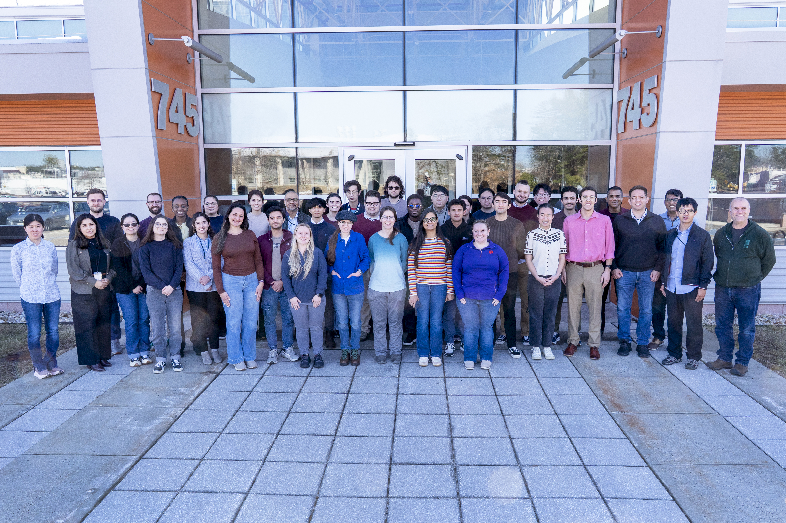

March 10-12, 2026#
TL;DR
Download all slide decks and other course materials:
March2026.zip
X-ray absorption spectroscopy is a core technique of the DOE synchrotron user facilities and attracts diverse scientific communities. This 3-day course offered by NSLS-II experts introduced XAS data analysis to new and prospective users and provided an opportunity to participate in measurements at NSLS-II XAS beamlines.
The first two days were devoted to the fundamentals of XAS analysis, data reduction and processing, and to the basics of XAS experiments and instrumentation. Participants were trained on XAS data analysis of increasing complexity. Modern XAS methods such as high-resolution spectroscopy were introduced.
On the third day, the participants participated in experiments at the ISS, QAS, and BMM and toured TES.
This course was organized and presented by Lu Ma, Bruce Ravel, Akhil Tayal, Jorge Moncada Vivas, Dali Yang, Dominick Wierzbicki, and Steve Farrell.
Olga More and Mercy Baez provided logistical support.
{kind=link}

Fig. 4 The participants and instructors of the March 2026 XAS Workshop#
Tuesday, March 10#
- Welcome:
A greeting from the NSLS-II director Elke Arenholz with an overview of the scientific mission of the light source
Presenter: Elke Arenholz
Slide deck:
2026 XAS Workshop Introduction.pdfSafety moment:
Safety_Minute.pdf
- Introduction to XAS:
Overview of the basic physics and chemistry of XAS
Presenter: Lu Ma
Slide deck:
2026_XAS_intro_Lu Ma_final.pdf
- Data reduction and background removal:
An introduction to processing XAS data, including background subtraction and Fourier transforms
Presenter: Akhil Tayal
Slide deck:
XAFS_Normalization_2026.pdf
- XANES Fundamental and Analysis:
An introduction to the information content of the XANES portion of the XAS spectrum.
Presenter: Jorge Moncada Vivas
Slide Deck:
XAFS_Normalization_2026.pdf
- EXAFS analysis I:
An introductory EXAFS data analysis problem using FeS2. This is the introduction to fitting EXAFS data analysis with Feff and Artemis
Presenter: Bruce Ravel
μ(E) data:
FeS2_RT.xmucrystal data:
FeS2.inp(this is a file format that Artemis can inport)final fitting model:
FeS2_final.fpjdiscussion of the FeS2 final fit:
fes2.pdf
- Sample Preparation and Environments:
A discussion of how to best prepare for and optimize your XAS experiment.
Presenter: Steve Farrell
Slide Deck:
2026 XAS Workshop - Sample Preparation - Farrell.pdf
Wednesday, March 11#
- Combined Techniques:
How XAFS measurements combine with other measurement techniques for deeper scientific insight.
Presenter: Lu Ma
Slide Deck:
combined techniques 2026-1.pdf
- High Energy Resolution Techniques:
Using crystal spectrometers to improve the energy resolution of the XANES measurements.
Presenter: Dominick Wierzbicki
Slide Deck:
High-energy-resolution.pdf
- EXAFS analysis I:
The FeS2 example from the previous day might seem a bit too simple. It involves analysis of a crystalline material, thus the path through the analysis obviously starts with crystal data. In these two lectures, some ideas are presented about how to perform EXAFS analysis on more complex materials.
Presenter: Bruce Ravel
EXAFS and non-crystalline materials:
noxtal.pdfA hard EXAFS problem, Hg bound to nucleotides:
hgdna.pdf[Ref #1] [Ref #2]
- Understanding the EXAFS Equation:
A deep dive into the meaning of the terms in the EXAFS equation.
Presenter: Dali Yang
Slide Deck:
XAS_School_EXAFS_Equation_Dali.pdf
- Writing proposals:
Hints and tips for successfully navigating the NSLS-II proposal system (and the proposal systems at other synchrotrons).
Presenter: Lisa Miller
Slide deck:
2026-03-11 XAS course-proposal writing.pdfNSLS-II XAS Beamlines:
XAS_Beamlines.pdf
Thursday, March 12#
- Experimental session:
Hands-on XAS data collection at the NSLS-II hard X-ray spectroscopy beamlines.
Data from QAS#
Zip file containing data from QAS:
QAS data 2026.zip
Data from BMM#
During the hands-on experiment at BMM in the afternoon, we measured several Mn standards along with the mineral babingtonite in fluorescence.
Zip file containing these data and the full electronic log book:
BMM-data.zip
Data from ISS#
Zip file containing data from ISS:
ISS-data.zip
Links and Resources#
Here is a zip file with all of the downloads linked above:
March2026.zip
Some useful websites:
Two textbooks about XAFS. (These are non-sponsored Amazon links offered for convenience and do not constitute an endorsement of this vendor.)